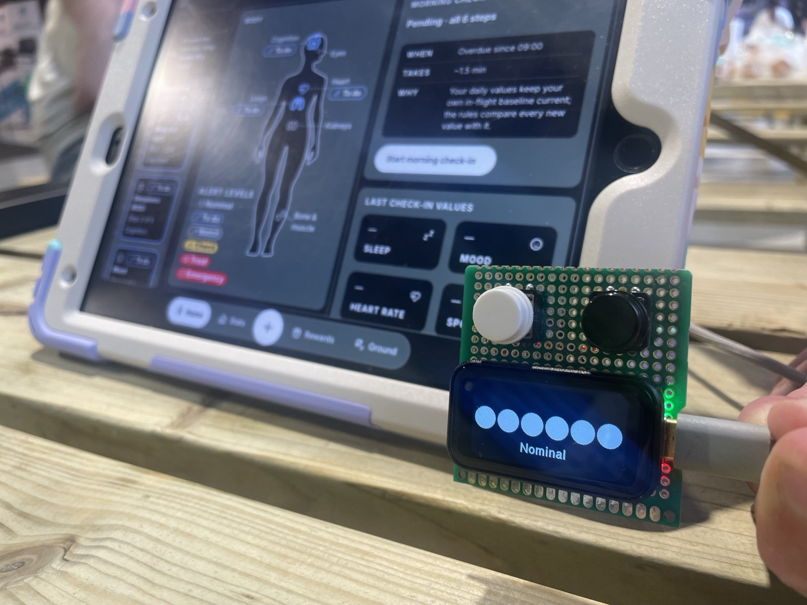

Companion · tu dispositivo personal

Nada nuevo que aprender: es el mismo código de colores que las alertas de la NASA.
Todo bien
Te toca un chequeo
Vigilar
Revisar
Tratar
Emergencia
Tu compañero
Si sus métricas llegan a Tratar o Emergencia, tu luz te avisa: «A2 necesita ayuda». Sin mostrar sus datos.
Six Dots Companion